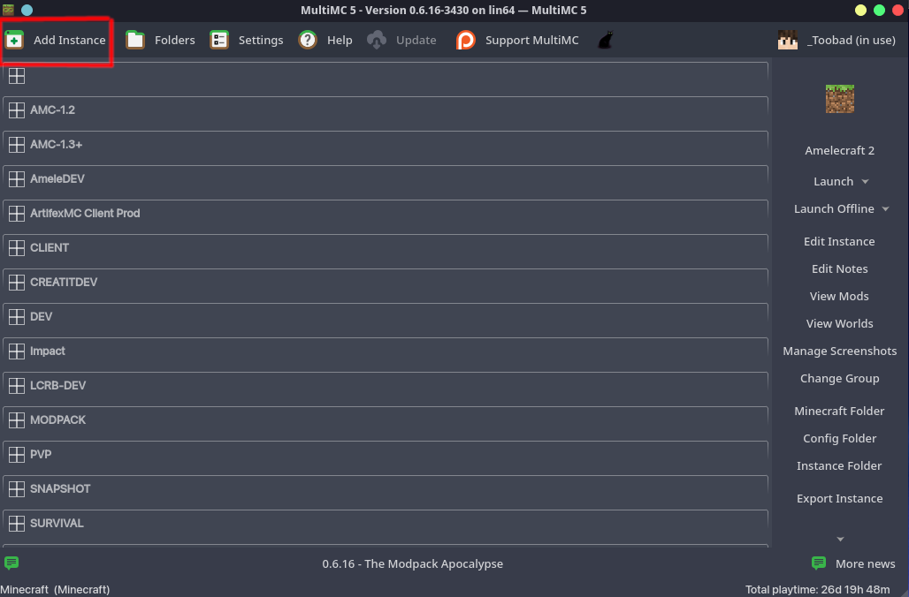
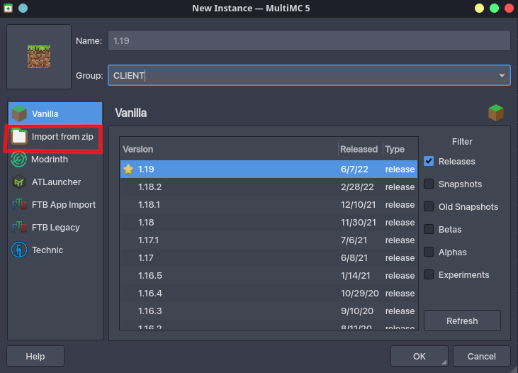
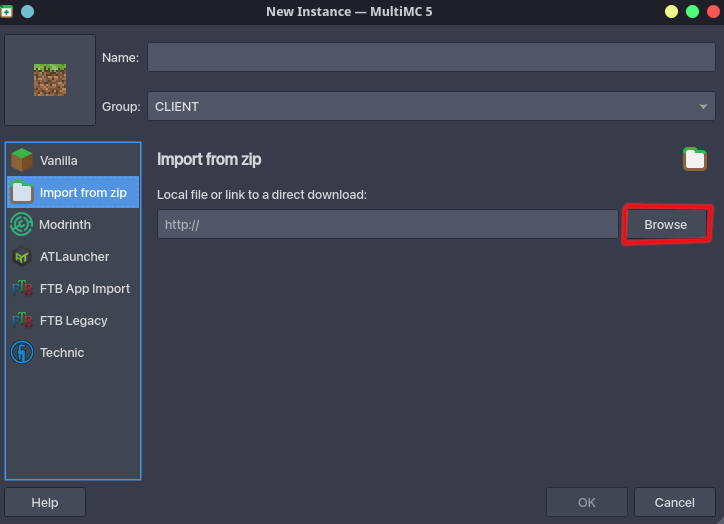
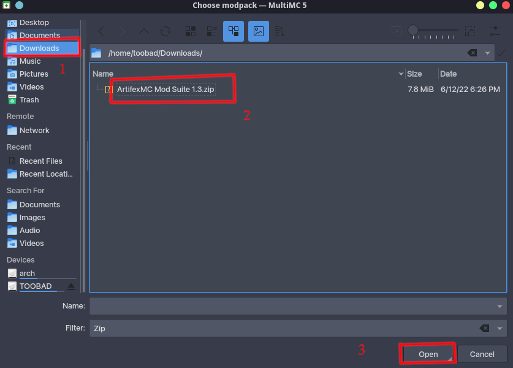
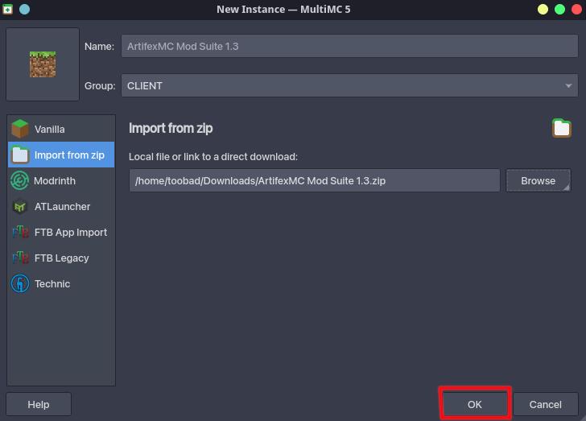
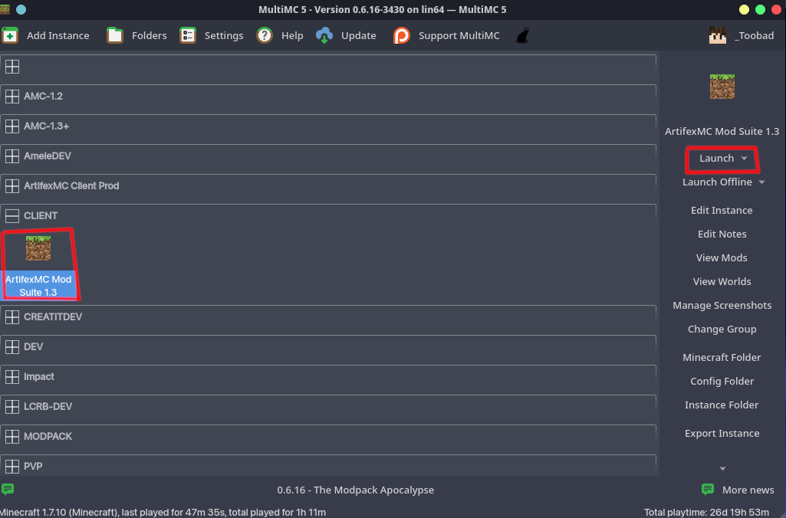

ArtifexMC Mod Suite 1.3 Instance'ının kurulumu.
- Bu linke giderek instance dosyasını indirin.
- MultiMC'yi açın.
- MultiMC'deki hesap konfigürasyonunun doğru yapıldığından emin olun. Buna sağ üstte belirlediğiniz kullanıcı adının yazıp yazmadığına bakarak anlayabilirsiniz.
- MultiMC penceresindeki "New Instance" butonuna basın.

- Açılan yeni pencerede "Import from zip" seçeneğine tıklayın.

- Ardından "Browse" butonuna tıklayın. Yeni bir pencere açılacaktır.

- Bu pencereden indirdiğiniz instance dosyasını seçin ve "Open/Aç" düğmesine basın.

- Ardından MultiMC'de dosyanın seçilmiş olduğunu göreceksiniz. İçeri aktarmayı onaylamak için "OK" düğmesine basın.

- Ardından clientınız hazırdır. Ya çift tıklayarak ya da "Launch" butonuna tıklayarak oyuna girebilirsiniz.
